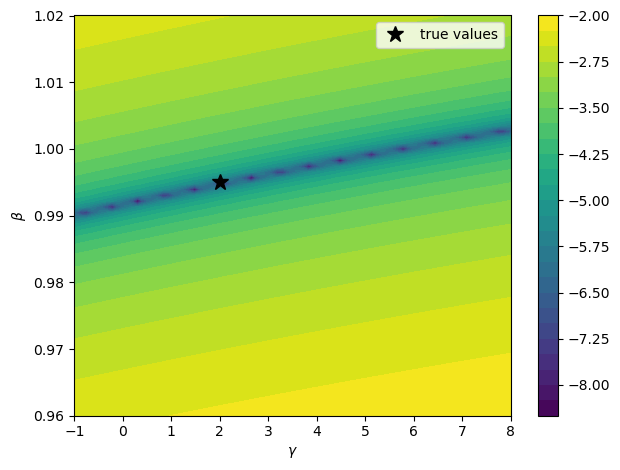
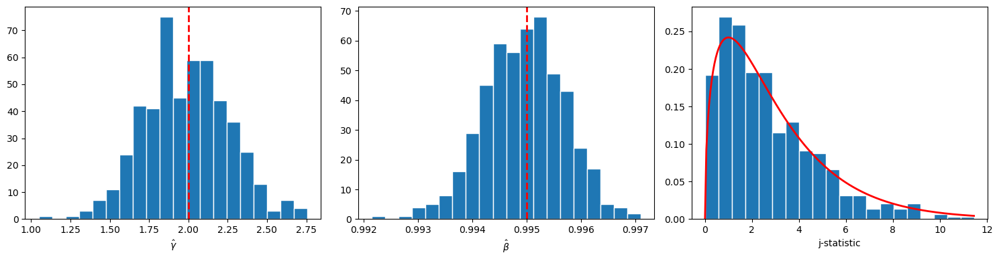

86. Estimating Euler Equations by Generalized Method of Moments#
86.1. Overview#
This lecture implements the generalized instrumental variables estimator of Hansen and Singleton [1982] for nonlinear rational expectations models.
The preceding lecture Stochastic Consumption, Risk Aversion, and the Temporal Behavior of Asset Returns derives the consumption Euler equation from the representative consumer’s problem with CRRA preferences and estimates it by maximum likelihood under normality assumptions.
That approach requires specifying the joint distribution of consumption and returns, and its validity depends on lognormality being correct.
However, as we saw in Stochastic Consumption, Risk Aversion, and the Temporal Behavior of Asset Returns, the lognormal model is rejected by the data.
Moreover, outside of linear-quadratic environments, closed-form solutions for equilibrium typically require strong assumptions about the stochastic properties of forcing variables, the nature of preferences, or the production technology.
Hansen and Singleton [1982] propose an estimation strategy that circumvents this requirement.
The key idea is that the Euler equations from economic agents’ optimization problems imply a set of population orthogonality conditions that depend on observable variables and unknown preference parameters.
By making sample counterparts of these orthogonality conditions close to zero, the parameters can be estimated without explicitly solving for the stochastic equilibrium and without specifying the distribution of the observable variables.
Though maximum likelihood estimators (such as the MLE in Stochastic Consumption, Risk Aversion, and the Temporal Behavior of Asset Returns) will be asymptotically more efficient when the distributional assumptions are correctly specified.
Relative to the full paper, we only estimate one return at a time (value-weighted stock returns), using only monthly nondurable consumption (ND), and omitting their maximum-likelihood comparison (Table II) and multi-return systems (Table III).
In addition to what comes with Anaconda, this lecture requires pandas-datareader
!pip install pandas-datareader
import warnings
import matplotlib.pyplot as plt
import numpy as np
import pandas as pd
from IPython.display import Latex
from numba import njit
from pandas_datareader import data as web
from scipy import stats
from scipy.optimize import minimize
from statsmodels.sandbox.regression import gmm
from statsmodels.tsa.stattools import acf
warnings.filterwarnings(
"ignore", message=".*date_parser.*", category=FutureWarning
)
We also define a helper to display DataFrames as LaTeX arrays in the hidden cell below
86.2. The economic model#
We consider a single-good economy with a representative consumer whose preferences are of the CRRA type, following Hansen and Singleton [1982] and Hansen and Singleton [1983].
Note
The following discussion is very close to the setup in Stochastic Consumption, Risk Aversion, and the Temporal Behavior of Asset Returns, but it is more general in that it allows for multiple assets with different maturities and does not assume lognormality.
The representative consumer chooses stochastic consumption and investment plans to maximize
where \(C_t\) is consumption in period \(t\), \(\beta \in (0,1)\) is a subjective discount factor, and \(u(\cdot)\) is a strictly concave period utility function.
The consumer trades \(N\) assets with potentially different maturities.
Let \(Q_{jt}\) denote the quantity of asset \(j\) held at the end of date \(t\), \(P_{jt}\) its price at date \(t\), and \(R_{jt}\) the date-\(t\) payoff from holding one unit of an \(M_j\)-period asset purchased at date \(t - M_j\).
Feasible consumption and investment plans must satisfy the sequence of budget constraints
where \(W_t\) is real labor income at date \(t\).
We specialize to CRRA preferences
where \(\gamma\) is the coefficient of relative risk aversion.
The maximization of (86.1) subject to (86.2) gives the first-order necessary conditions (see Lucas [1978], Brock [1982], Prescott and Mehra [1980], and Stochastic Consumption, Risk Aversion, and the Temporal Behavior of Asset Returns):
When asset \(j\) is a one-period stock (\(M_j = 1\)) with payoff \(R_{jt+1} = P_{jt+1} + D_{jt+1}\) where \(D_{jt}\) is the dividend, the gross real return is \(R_{t+1}^i = (P_{i,t+1}+D_{i,t+1})/P_{i,t}\).
Substituting the CRRA marginal utility into (86.4) and dividing both sides by \(P_{jt} u'(C_t)\) yields the Euler equation
where \(R_{t+1}^i\) is the gross real return on asset \(i\).
We define the stochastic discount factor \(M_{t+1}(\theta) = \beta (C_{t+1}/C_t)^{-\gamma}\) with parameter vector \(\theta = (\gamma, \beta)\).
In this notation the Euler equation becomes \(E_t[M_{t+1}(\theta) R_{t+1}^i - 1] = 0\).
As we have seen and will see, equation (86.5) is the central object of both Stochastic Consumption, Risk Aversion, and the Temporal Behavior of Asset Returns and this lecture.
It holds for every traded asset for which the agent’s optimality conditions apply (interior solution, no binding portfolio constraints or transaction costs).
It depends on observable quantities (consumption growth and returns) and unknown preference parameters (\(\gamma\) and \(\beta\)).
The challenge that Hansen and Singleton [1982] address is how to estimate \(\theta\) from (86.5) without specifying the rest of the economic environment.
86.3. From conditional to unconditional moments#
A natural approach to estimating \(\theta\) from (86.5) would be to specify the entire economic environment, solve for equilibrium, and apply maximum likelihood.
Just like what we did together in Stochastic Consumption, Risk Aversion, and the Temporal Behavior of Asset Returns,
Hansen and Singleton [1982] argue that this is impractical for most nonlinear models because it requires strong assumptions about the stochastic properties of “forcing variables” and the production technology.
Their alternative is to work directly with the Euler equation’s implications for observable moments.
The Euler equation (86.5) states that \(E_t[M_{t+1}(\theta_0) R_{t+1}^i - 1] = 0\).
Let \(z_t\) denote any \(q\)-dimensional vector of variables that are in the agent’s time-\(t\) information set and observed by the econometrician.
Because \(z_t\) is known at date \(t\),
This yields the moment restriction
where \(\otimes\) denotes the Kronecker product.
The vector \(z_t\) plays the role of instruments.
The conditional Euler equation \(E_t[M_{t+1}R_{t+1}^i - 1] = 0\) says that the pricing error is unpredictable given everything in the agent’s time-\(t\) information set.
That is a very strong restriction — it says the pricing error is orthogonal to every time-\(t\) measurable random variable.
We cannot use the entire information set in practice, but we can pick any finite collection of time-\(t\) observable variables \(z_t\) and the orthogonality must still hold.
Each variable we include in \(z_t\) gives us one sample moment condition \(\frac{1}{T}\sum_t (M_{t+1}R_{t+1}^i - 1)\, z_{kt} \approx 0\) that we can compute from data.
More instruments means more orthogonality conditions to match, which can improve efficiency and provides more overidentifying restrictions to test the model against.
With \(q\) instruments and \(m\) Euler equations we obtain \(mq\) moment restrictions for estimating the parameter vector \(\theta\).
For one return and \(p\) lags of instruments, Hansen and Singleton [1982] use
where \(g_t = C_t / C_{t-1}\) is gross consumption growth.
Note
Hansen and Singleton [1982] describe \(z_t\) as “lagged values of \(x_{t+1}\)” where \(x_{t+1} = (R_{t+1}, g_{t+1})\).
The constant 1 is not stated explicitly but is implied by the degrees of freedom reported in their Table I.
More generally, Hansen and Singleton [1982] write the first-order condition as \(E_t[h(x_{t+n}, b_0)] = 0\), where \(x_{t+n}\) is a vector of observables dated \(t+n\) and \(b_0\) is the true parameter vector.
The disturbance \(u_{t+1} = h(x_{t+1}, b_0)\) is serially uncorrelated in the one-period stock case.
Stacking moment conditions via the Kronecker product gives \(f(x_{t+n}, z_t, b) = h(x_{t+n}, b) \otimes z_t\), a vector of dimension \(mq\).
The resulting unconditional restriction \(E[f(x_{t+n}, z_t, b_0)] = 0\) nests both the single-return one-period Euler equation and the multi-maturity asset pricing restrictions.
The orthogonality condition and lagged instrument vector follow equations (86.6) and (86.7)
def euler_error_horizon(params, exog, horizon=1):
"""
Compute Euler-equation pricing errors for (γ, β) at a given horizon.
"""
if horizon < 1:
raise ValueError("horizon must be at least one.")
γ, β = params
gross_return = exog[:, 0]
gross_cons_growth = exog[:, 1]
return (β ** horizon) * gross_cons_growth ** (-γ) * gross_return - 1.0
def euler_error_grad_horizon(params, exog, horizon=1):
"""
Gradient of the Euler error wrt (γ, β) at a given horizon.
"""
if horizon < 1:
raise ValueError("horizon must be at least one.")
γ, β = params
gross_return = exog[:, 0]
gross_cons_growth = exog[:, 1]
g_pow = gross_cons_growth ** (-γ)
common = (β ** horizon) * g_pow * gross_return
dγ = -common * np.log(gross_cons_growth)
dβ = horizon * (β ** (horizon - 1)) * g_pow * gross_return
return np.column_stack([dγ, dβ])
def euler_error(params, exog):
"""
One-period Euler-equation pricing errors for (γ, β).
"""
return euler_error_horizon(params, exog, horizon=1)
A helper aligns outcomes and lagged instruments for nonlinear IV-GMM
def build_gmm_arrays(data, n_lags):
"""
Build endog, exog, and instruments for nonlinear IV-GMM.
"""
if n_lags < 1:
raise ValueError("n_lags must be at least one.")
if data.shape[0] <= n_lags:
raise ValueError("Sample size must exceed n_lags.")
t_obs = data.shape[0]
exog = data[n_lags:, :]
endog = np.zeros(exog.shape[0])
n_obs = t_obs - n_lags
n_instr = 2 * n_lags + 1
instruments = np.empty((n_obs, n_instr))
instruments[:, 0] = 1.0
for j in range(n_lags):
left = 2 * j + 1
right = left + 2
instruments[:, left:right] = data[n_lags - 1 - j : t_obs - 1 - j, :]
return endog, exog, instruments
When the asset has maturity \(n > 1\), the Euler equation involves \(n\)-period compounded returns and consumption growth.
For CRRA preferences, the \(n\)-period Euler restriction is
For estimation, the \(n\)-period exog can either use directly observed \(n\)-period returns/payoffs, or be constructed by compounding one-period returns and consumption growth over \(n\) consecutive periods.
Again, a key requirement from Hansen and Singleton [1982] is that instruments \(z_t\) must lie in the agent’s time-\(t\) information set \(\mathcal{I}_t\).
For the multi-period case, instruments must be measurable with respect to \(\mathcal{I}_t\).
In particular, one should avoid any lagged multi-period aggregates that still include periods after \(t\), since these would embed realizations not in \(\mathcal{I}_t\).
The \(n\)-period exog is constructed by compounding one-period data, and instruments are timed to lie in \(\mathcal{I}_t\).
def build_gmm_arrays_horizon(one_period_data, n_lags, horizon):
"""
Build endog, exog, and instruments for multi-period GMM.
Exog contains n-period compounded returns and consumption growth.
"""
if horizon < 1:
raise ValueError("horizon must be at least one.")
if n_lags < 1:
raise ValueError("n_lags must be at least one.")
T = one_period_data.shape[0]
if T <= n_lags + horizon:
raise ValueError("Sample size too small for given n_lags and horizon.")
# Each observation starts at index t (the first period in the window)
# The window spans one_period_data[t : t + horizon]
# Instruments use one_period_data[t - 1], ..., one_period_data[t - n_lags]
starts = np.arange(n_lags, T - horizon + 1)
n_obs = len(starts)
exog = np.empty((n_obs, 2))
n_instr = 2 * n_lags + 1
instruments = np.empty((n_obs, n_instr))
instruments[:, 0] = 1.0
for i, t in enumerate(starts):
window = one_period_data[t : t + horizon, :]
exog[i, 0] = np.prod(window[:, 0]) # n-period return
exog[i, 1] = np.prod(window[:, 1]) # n-period consumption growth
for j in range(n_lags):
instruments[
i, 2 * j + 1 : 2 * j + 3] = one_period_data[t - 1 - j, :]
endog = np.zeros(n_obs)
return endog, exog, instruments
When \(n > 1\), the Euler equation involves variables dated \(t + n\), and the disturbance \(u_{t+n} = h(x_{t+n}, b_0)\) will generally be serially correlated.
As Hansen and Singleton [1982] note, if the \(m\) assets are all one-period stocks, then \(u\) is serially uncorrelated because observations on \(x_{t-s}\), \(s \geq 0\), are in the agent’s time-\(t\) information set and \(E_t[h(x_{t+1}, b_0)] = 0\).
But if \(n_j > 1\) for some asset \(j\), the condition \(E_t[h(x_{t+n}, b_0)] = 0\) does not preclude serial correlation in \(u\), since \(x_{t+n-1}\) is not necessarily in \(I_t\) when \(n > 1\).
The number of population autocovariances in the long-run covariance \(S_0\) is determined by \(n\), the order of the moving average disturbance term \(u_t\).
We implement this directly as a finite-order covariance estimator
def finite_ma_covariance(moment_series, ma_order):
"""
Estimate
S = Gamma_0 + sum_{j=1}^{ma_order}(Gamma_j + Gamma_j.T) for moment vectors.
"""
if ma_order < 0:
raise ValueError("ma_order must be nonnegative.")
if moment_series.ndim != 2:
raise ValueError("moment_series must be 2D.")
t_obs, n_mom = moment_series.shape
if t_obs <= ma_order:
raise ValueError("Need more observations than ma_order.")
# Use the *uncentered* cross products
# T^{-1} sum_t f_t f_{t-j}' and then add the symmetric lag terms.
s_hat = moment_series.T @ moment_series / t_obs
for j in range(1, ma_order + 1):
gamma_j = moment_series[j:, :].T @ moment_series[:-j, :] / t_obs
s_hat += gamma_j + gamma_j.T
ridge = 1e-8 * np.eye(n_mom)
return s_hat + ridge
The estimation procedure in Hansen and Singleton [1982] is a two-step generalized instrumental variables procedure.
In the first step, we minimize the GMM criterion with a suboptimal weighting matrix (the identity) to obtain a consistent preliminary estimate \(b_T\).
In the second step, we use \(b_T\) to estimate the covariance matrix of the sample moment conditions and invert it to form the optimal weighting matrix, then re-minimize the criterion.
Let’s implement this algorithm
def two_step_gmm(data, n_lags, ma_order=0, horizon=1, start_params=None):
"""
Two-step GMM with finite-order covariance.
The Euler error uses β**horizon.
"""
if start_params is None:
start_params = np.array([1.0, 0.99])
else:
start_params = np.asarray(start_params, dtype=float)
if horizon == 1:
_, exog, instruments = build_gmm_arrays(data, n_lags)
else:
_, exog, instruments = build_gmm_arrays_horizon(data, n_lags, horizon)
n_obs = exog.shape[0]
def sample_moments(params):
err = euler_error_horizon(params, exog, horizon=horizon)
return err[:, None] * instruments
def objective(params, weight_matrix):
g_bar = sample_moments(params).mean(axis=0)
return float(g_bar @ weight_matrix @ g_bar)
def objective_grad(params, weight_matrix):
g_bar = sample_moments(params).mean(axis=0)
grad_err = euler_error_grad_horizon(params, exog, horizon=horizon)
d_bar = (instruments.T @ grad_err) / n_obs
return 2.0 * d_bar.T @ weight_matrix @ g_bar
q = instruments.shape[1]
w_identity = np.eye(q)
bounds = [(-2.0, 10.0), (0.85, 1.5)]
def coarse_starts(weight_matrix, n_best=5):
γ_grid = np.linspace(bounds[0][0], bounds[0][1], 33)
β_grid = np.linspace(bounds[1][0], bounds[1][1], 33)
scored = []
for γ0 in γ_grid:
for β0 in β_grid:
params0 = np.array([γ0, β0])
val = objective(params0, weight_matrix)
if np.isfinite(val):
scored.append((val, params0))
scored.sort(key=lambda item: item[0])
return [params for _, params in scored[:n_best]] or [start_params]
def best_local_minimize(weight_matrix, starts):
best = None
for x0 in starts:
res = minimize(
objective,
x0=x0,
args=(weight_matrix,),
jac=objective_grad,
method="L-BFGS-B",
bounds=bounds,
options={"maxiter": 25_000},
)
if not np.isfinite(res.fun):
continue
if best is None or (res.fun < best.fun):
best = res
return best if best is not None else minimize(
objective,
x0=start_params,
args=(weight_matrix,),
jac=objective_grad,
method="L-BFGS-B",
bounds=bounds,
options={"maxiter": 25_000},
)
step1_starts = [start_params] + coarse_starts(w_identity, n_best=5)
step1 = best_local_minimize(w_identity, step1_starts)
params1 = step1.x
m1 = sample_moments(params1)
s_hat = finite_ma_covariance(m1, ma_order=ma_order)
w_opt = np.linalg.pinv(s_hat)
step2_starts = [params1] + coarse_starts(w_opt, n_best=5)
step2 = best_local_minimize(w_opt, step2_starts)
params2 = step2.x
m2 = sample_moments(params2)
s_hat2 = finite_ma_covariance(m2, ma_order=ma_order)
w_opt2 = np.linalg.pinv(s_hat2)
g2 = m2.mean(axis=0)
j_stat = float(n_obs * (g2 @ w_opt2 @ g2))
df = instruments.shape[1] - len(params2)
j_prob = float(stats.chi2.cdf(j_stat, df=df)) if df > 0 else np.nan
p_value = float(1.0 - j_prob) if df > 0 else np.nan
# Asymptotic covariance under optimal weighting: (D' S^{-1} D)^{-1} / T.
grad_err = euler_error_grad_horizon(params2, exog, horizon=horizon)
d_hat = (instruments.T @ grad_err) / n_obs
cov_hat = np.linalg.pinv(d_hat.T @ w_opt2 @ d_hat) / n_obs
se_hat = np.sqrt(np.diag(cov_hat))
return {
"params_step1": params1,
"params_step2": params2,
"se_step2": se_hat,
"weight_opt": w_opt2,
"j_stat": j_stat,
"j_df": int(df),
"j_prob": j_prob,
"j_pval": p_value,
"n_obs": int(n_obs),
"success": bool(step2.success),
}
86.4. GMM criterion and asymptotic theory#
We now formalize the estimation procedure.
Let \(m_t(\theta) = (M_{t+1}(\theta) R_{t+1}^i - 1) \otimes z_t\) denote the vector of moment conditions at date \(t\), and define the sample mean
If the model is correctly specified, \(g_T(\theta_0)\) should be close to zero for large \(T\).
We estimate \(\theta\) by choosing the parameter vector that makes \(g_T\) as close to zero as possible, measured by a quadratic form:
where \(W_T\) is a symmetric positive-definite weighting matrix.
Under regularity conditions given in Hansen [1982], the GMM estimator is consistent, asymptotically normal, and has the sandwich covariance matrix
where \(D = E[\partial m_t(\theta_0)/\partial\theta^\top]\) is the Jacobian of the moment conditions, \(S\) is the long-run covariance matrix of \(m_t(\theta_0)\), and \(W\) is the probability limit of \(W_T\).
Hansen [1982] shows that the optimal weighting matrix is \(W^* = S^{-1}\), which yields the smallest asymptotic covariance matrix among all choices of \(W\).
Under \(W = S^{-1}\) the sandwich simplifies to \((D^\top S^{-1} D)^{-1}\).
When the number of moment conditions \(r\) (e.g., \(r = mq\) for \(m\) Euler equations and \(q\) instruments) exceeds the number of parameters \(k\), the model is overidentified and we can test whether the data are consistent with the maintained restrictions.
Hansen and Singleton [1982] test the overidentifying restrictions using a result from Hansen [1982]:
where \(\hat S\) is a consistent estimator of \(S\).
A large \(J_T\) relative to \(\chi^2_{r-k}\) critical values leads to rejection of the model’s overidentifying restrictions.
For the multi-period case (\(n > 1\)), the disturbance is at most MA(\(n-1\)) as discussed above, so Hansen and Singleton [1982] obtain the optimal weighting matrix by setting \(W_0 = S_0^{-1}\) where
86.5. Covariance estimation and the choice of instruments#
For the one-period Euler equation (\(n = 1\)), the disturbance \(u_{t+1} = M_{t+1}(\theta_0) R_{t+1} - 1\) is a martingale difference sequence.
In this case the moment vector \(m_t(\theta_0) = u_{t+1} \otimes z_t\) is serially uncorrelated, and the long-run covariance \(S\) equals the contemporaneous variance \(E[m_t m_t^\top]\).
The covariance estimator therefore requires no kernel or bandwidth choice.
We simply use the sample analogue \(\hat S = T^{-1} \sum_t m_t m_t^\top\).
In our implementation below, we use a HAC (heteroskedasticity and autocorrelation consistent) estimator against possible mild serial dependence from time aggregation or measurement timing.
This is a modern precaution, not part of the original Hansen and Singleton [1982] procedure, which exploits the known MA order directly as in (86.13).
The number of instrument lags \(p\) determines how many orthogonality conditions we use and hence the power of the \(J\) test.
Hansen and Singleton [1982] report results for NLAG \(= 1, 2, 4, 6\) and note (footnote 12) that using more orthogonality conditions may lead to estimators with less desirable small-sample properties.
Below we implement the estimation procedure and allow the user to choose the number of lags and whether to use a HAC estimator for the covariance matrix
def estimate_gmm(
data,
n_lags,
start_params=None,
use_hac=True,
hac_maxlag=None,
maxiter=2,
):
"""
Estimate Euler-equation parameters with nonlinear IV-GMM.
"""
if start_params is None:
start_params = np.array([1.0, 0.99])
endog, exog, instruments = build_gmm_arrays(data, n_lags)
model = gmm.NonlinearIVGMM(endog, exog, instruments, euler_error)
if use_hac:
if hac_maxlag is None:
hac_maxlag = max(
1, int(
np.floor(4.0 * (endog.shape[0] / 100.0) ** (2.0 / 9.0))))
result = model.fit(
start_params=start_params,
maxiter=maxiter,
optim_method="bfgs",
optim_args={"disp": False},
weights_method="hac",
wargs={"maxlag": hac_maxlag},
)
else:
result = model.fit(
start_params=start_params,
maxiter=maxiter,
optim_method="bfgs",
optim_args={"disp": False},
)
return result
Next we include a helper to run GMM estimation across lag lengths and summarize results in a table
def run_gmm_by_lag(
data,
lags=(1, 2, 4, 6),
use_hac=True,
hac_maxlag=None,
):
"""
Estimate GMM models by lag length and return a summary table.
"""
rows = []
results = {}
for lag in lags:
res = estimate_gmm(data, n_lags=lag, use_hac=use_hac, hac_maxlag=hac_maxlag)
results[lag] = res
j_stat, j_pval, j_df = res.jtest()
j_prob = float(stats.chi2.cdf(j_stat, df=j_df)) if j_df > 0 else np.nan
rows.append(
{
"NLAG": lag,
"γ_hat": res.params[0],
"se_γ": res.bse[0],
"β_hat": res.params[1],
"se_β": res.bse[1],
"j_stat": j_stat,
"j_prob": j_prob,
"j_pval": j_pval,
"j_df": int(j_df),
"n_obs": int(res.nobs),
}
)
table = pd.DataFrame(rows).set_index("NLAG")
return table, results
def run_two_step_by_lag(
data,
lags=(1, 2, 4, 6),
horizon=1,
):
"""
Two-step GMM with exact S0 (MA order 0) across lag lengths.
"""
rows = []
start_params = None
for lag in lags:
res = two_step_gmm(
data,
n_lags=lag,
ma_order=0,
horizon=horizon,
start_params=start_params,
)
start_params = res["params_step2"]
rows.append(
{
"NLAG": lag,
"γ_hat": res["params_step2"][0],
"se_γ": res["se_step2"][0],
"β_hat": res["params_step2"][1],
"se_β": res["se_step2"][1],
"j_stat": res["j_stat"],
"j_prob": res["j_prob"],
"j_pval": res["j_pval"],
"j_df": res["j_df"],
"n_obs": res["n_obs"],
}
)
return pd.DataFrame(rows).set_index("NLAG")
86.5.1. Simulation#
Before applying the estimator to real data, we verify that GMM recovers known parameters from simulated data.
We build a simulator that generates synthetic return-growth pairs satisfying the Euler equation by construction.
We generate log consumption growth from a stationary AR(1), compute the stochastic discount factor at known true parameters, and construct gross returns as \(R_{t+1} = \xi_{t+1} / M_{t+1}(\theta_0)\) where \(\xi_{t+1}\) is an iid lognormal shock with mean one.
@njit
def _ar1_simulate(mu_c, phi_c, sigma_c, shocks_c, total_n):
"""
Simulate AR(1) log consumption growth.
"""
delta_c = np.empty(total_n)
delta_c[0] = mu_c
for t in range(1, total_n):
delta_c[t] = mu_c * (1.0 - phi_c) + phi_c * delta_c[t - 1] + sigma_c * shocks_c[t]
return delta_c
def simulate_euler_sample(
n_obs,
γ_true=0.8,
β_true=0.993,
seed=0,
):
"""
Simulate [gross real return, gross consumption growth].
"""
rng = np.random.default_rng(seed)
mu_c = 0.0015
sigma_c = 0.006
phi_c = 0.4
sigma_eta = 0.02
burn_in = 200
total_n = n_obs + burn_in
shocks_c = rng.standard_normal(total_n)
delta_c = _ar1_simulate(mu_c, phi_c, sigma_c, shocks_c, total_n)
cons_growth = np.exp(delta_c[burn_in:])
sdf = β_true * cons_growth ** (-γ_true)
# Positive mean-one return shock: E[ξ]=1 so E[M R]=1 by construction.
eps = rng.standard_normal(n_obs)
xi = np.exp(sigma_eta * eps - 0.5 * sigma_eta**2)
gross_return = xi / sdf
return np.column_stack([gross_return, cons_growth])
We set \(\gamma = 2\) and \(\beta = 0.995\) as the true parameters and generate 700 monthly observations from the Euler-consistent DGP.
γ_true = 2.0
β_true = 0.995
sim_data = simulate_euler_sample(
n_obs=5000,
γ_true=γ_true,
β_true=β_true,
seed=0,
)
print(f"Simulation sample size: {sim_data.shape[0]}")
print(f"True γ: {γ_true:.3f}")
print(f"True β: {β_true:.3f}")
Simulation sample size: 5000
True γ: 2.000
True β: 0.995
We now estimate GMM across lag lengths, following the format of Table I in Hansen and Singleton [1982].
sim_table = run_two_step_by_lag(sim_data, lags=(1, 2, 4, 6), horizon=1)
GMM recovers the true \(\gamma\) and \(\beta\) across lag specifications pretty closely.
For hypothesis testing, the right-tail \(p\) value is \(1-\mathrm{Prob}(J)\).
The large standard errors visible in both papers’ tables suggest that the preference parameters \(\gamma\) and \(\beta\) can be weakly identified.
To visualize this, we plot the GMM criterion over a \((\gamma, \beta)\) grid using the simulated data
def gmm_objective_surface(
data,
n_lags=2,
γ_grid=None,
β_grid=None,
):
"""
Compute identity-weighted GMM objective on a parameter grid.
"""
_, exog, instruments = build_gmm_arrays(data, n_lags)
if γ_grid is None:
γ_grid = np.linspace(-1.0, 8.0, 70)
if β_grid is None:
β_grid = np.linspace(0.96, 1.02, 70)
objective = np.empty((len(β_grid), len(γ_grid)))
for i, β_val in enumerate(β_grid):
for j, γ_val in enumerate(γ_grid):
err = euler_error(np.array([γ_val, β_val]), exog)
moments = (err[:, None] * instruments).mean(axis=0)
objective[i, j] = moments @ moments
return γ_grid, β_grid, objective
γ_grid, β_grid, objective = gmm_objective_surface(sim_data, n_lags=2)
log_obj = np.log10(objective + 1e-12)
fig, ax = plt.subplots()
contours = ax.contourf(γ_grid, β_grid, log_obj, levels=30, cmap="viridis")
ax.set_xlabel(r"$\gamma$")
ax.set_ylabel(r"$\beta$")
ax.plot(γ_true, β_true, "k*", ms=12, lw=2, label="true values")
ax.legend()
plt.colorbar(contours, ax=ax)
plt.tight_layout()
plt.show()

Fig. 86.1 GMM objective contour surface (simulated data)#
The criterion surface may have elongated valleys where many parameter combinations fit the moments nearly equally well.
To illustrate the multi-period case from Section 2 of Hansen and Singleton [1982], we estimate the three-period Euler restriction using overlapping-horizon returns and consumption growth, with instruments formed from one-period data dated \(t\) or earlier and the finite-order covariance appropriate for MA(2) disturbances.
horizon_n = 3
two_step = two_step_gmm(
sim_data,
n_lags=2,
ma_order=horizon_n - 1,
horizon=horizon_n,
)
print(f"Horizon n: {horizon_n}")
print(f"Step-2 converged: {two_step['success']}")
print(f"Step-2 gamma: {two_step['params_step2'][0]:.4f}")
print(f"Step-2 beta (one-period): {two_step['params_step2'][1]:.4f}")
print(
f"J({two_step['j_df']}): {two_step['j_stat']:.3f}, "
f"Prob={two_step['j_prob']:.3f}, p={two_step['j_pval']:.3f}"
)
_, exog_n, _ = build_gmm_arrays_horizon(sim_data, n_lags=2, horizon=horizon_n)
acf_n = acf(
euler_error_horizon(two_step["params_step2"], exog_n, horizon=horizon_n),
nlags=6,
fft=True,
)
print("Euler-error ACF lags 1-3:", ", ".join([f"{v:.3f}" for v in acf_n[1:4]]))
Horizon n: 3
Step-2 converged: True
Step-2 gamma: 2.1095
Step-2 beta (one-period): 0.9949
J(3): 2.518, Prob=0.528, p=0.472
Euler-error ACF lags 1-3: 0.678, 0.356, 0.023
The low-lag ACF is consistent with the MA(2) dependence implied by the 3-period horizon.
We now run a Monte Carlo exercise with 500 replications to visualize the finite-sample distribution of \(\hat\gamma\), \(\hat\beta\), and the \(J\) statistic and verify that the asymptotic theory from Section 3 of Hansen and Singleton [1982] provides a reasonable approximation.
n_rep = 500
estimates = []
j_stats = []
for rep in range(n_rep):
rep_data = simulate_euler_sample(
n_obs=900,
γ_true=γ_true,
β_true=β_true,
seed=rep,
)
rep_res = estimate_gmm(rep_data, n_lags=2, use_hac=True, maxiter=2)
estimates.append(rep_res.params)
j_stats.append(rep_res.jval)
estimates = np.asarray(estimates)
j_stats = np.asarray(j_stats)
fig, axes = plt.subplots(1, 3, figsize=(15, 4))
axes[0].hist(estimates[:, 0], bins=20, edgecolor="white")
axes[0].axvline(γ_true, color="red", ls="--", lw=2)
axes[0].set_xlabel(r"$\hat{\gamma}$")
axes[1].hist(estimates[:, 1], bins=20, edgecolor="white")
axes[1].axvline(β_true, color="red", ls="--", lw=2)
axes[1].set_xlabel(r"$\hat{\beta}$")
df_j = 2 * 2 + 1 - 2
axes[2].hist(j_stats, bins=20, density=True, edgecolor="white")
grid = np.linspace(0.0, max(j_stats.max(), 1.0), 200)
axes[2].plot(grid, stats.chi2.pdf(grid, df_j), "r-", lw=2)
axes[2].set_xlabel("j-statistic")
plt.tight_layout()
plt.show()

Fig. 86.2 Monte Carlo GMM sampling distributions#
Both \(\hat\gamma\) and \(\hat\beta\) are centered near their true values, and the \(J\) histogram tracks the \(\chi^2\) density, supporting the asymptotic approximation at this sample size.
86.6. Empirical GMM estimation#
We now apply GMM to observed data, following the empirical strategy of Section 5 in Hansen and Singleton [1982].
Hansen and Singleton [1982] use monthly per capita consumption of nondurables (ND) and nondurables plus services (NDS) paired with the equally-weighted (EWR) and value-weighted (VWR) aggregate stock returns from CRSP, for 1959:2 through 1978:12.
We focus on their ND+VWR specification using FRED nondurables consumption and the Ken French value-weighted market return as a proxy for CRSP, on the same 1959:2–1978:12 sample period.
Because the Ken French return is not identical to the original CRSP NYSE value-weighted return, we only want to match the paper qualitatively.
Both this lecture and the companion lecture Stochastic Consumption, Risk Aversion, and the Temporal Behavior of Asset Returns use the same data construction.
The hidden cell below pulls the relevant FRED series, constructs per capita real consumption, and joins with Ken French market returns via pandas-datareader.
We first examine the raw data moments.
LAGS = (1, 2, 4, 6)
emp_frame, emp_data = get_estimation_data()
print(f"Mean net real return: {(emp_data[:, 0].mean() - 1.0) * 100:.3f}%")
print(f"Std net real return: {emp_data[:, 0].std() * 100:.3f}%")
print(f"Mean net consumption growth: {(emp_data[:, 1].mean() - 1.0) * 100:.3f}%")
print(f"Std net consumption growth: {emp_data[:, 1].std() * 100:.3f}%")
print(f"Std log consumption growth: {np.log(emp_data[:, 1]).std() * 100:.3f}%")
Mean net real return: 0.308%
Std net real return: 4.335%
Mean net consumption growth: 0.093%
Std net consumption growth: 0.915%
Std log consumption growth: 0.915%
One feature of these data is the large gap between the volatility of returns and the volatility of consumption growth.
This is again an empirical fact underlying the equity premium puzzle of Mehra and Prescott [1985]: matching the observed equity premium with CRRA preferences requires implausibly high risk aversion.
We now estimate the Euler equation using the two-step generalized instrumental variables (GIV) / GMM procedure in Hansen and Singleton [1982].
For the one-period stock-return Euler equation (\(n=1\)), the disturbance is a martingale difference sequence, so the optimal weighting matrix uses the contemporaneous covariance \(S_0 = E[m_t m_t^\top]\).
To match Table I, we report the paper’s exponent parameter \(\alpha\) in \(E_t[\beta (C_{t+1}/C_t)^\alpha R_{t+1} - 1] = 0\).
The two-step GMM estimates of \(\hat{\alpha}\) and \(\hat{\beta}\) by lag length are
gmm_raw = run_two_step_by_lag(emp_data, lags=LAGS, horizon=1)
gmm_raw.index.name = "NLAG"
table_i = pd.DataFrame(index=gmm_raw.index)
table_i.index.name = "NLAG"
table_i[r"\hat{\alpha}"] = -gmm_raw["γ_hat"]
table_i[r"SE(\hat{\alpha})"] = gmm_raw["se_γ"]
table_i[r"\beta"] = gmm_raw["β_hat"]
table_i[r"\mathrm{SE}(\beta)"] = gmm_raw["se_β"]
table_i[r"\chi^2"] = gmm_raw["j_stat"]
table_i["DF"] = gmm_raw["j_df"]
table_i["Prob"] = gmm_raw["j_prob"]
display_table(
table_i,
fmt={
r"\hat{\alpha}": "{:.4f}",
r"SE(\hat{\alpha})": "{:.4f}",
r"\beta": "{:.4f}",
r"\mathrm{SE}(\beta)": "{:.4f}",
r"\chi^2": "{:.4f}",
"DF": "{:.0f}",
"Prob": "{:.4f}",
},
)
For comparison, Table I of Hansen and Singleton [1982] (as corrected in the 1984 Econometrica errata) reports the following ND+VWR values for 1959:2–1978:12:
They are very close to our estimates.
86.7. Summary#
The GMM estimator requires only the orthogonality conditions implied by the Euler equation and a set of conditioning variables.
It does not require assumptions about the joint distribution of consumption and returns, the production technology, or any other part of the economic environment beyond the representative agent’s first-order conditions.
So GMM is provides a way to estimate some objects of interest while not estimating all of the parameters that Hansen and Singleton [1983] estimated in their loglinear model of consumption growth and returns.
If the complete model of Hansen and Singleton [1983] is correctly specified, then their maximum likelihood estimators promise to be more efficient that are the GMM estimators described in this lecture.
The theme of estimating something while not estimating everything runs through much of Lars Peter Hansen’s work. See Hansen [2014]